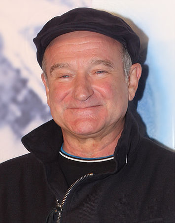

 Robin McLaurin Williams (July 21, 1951 - August 11, 2014) was an American actor and comedian. Known for his improvisational skills and the wide variety of characters he created on the spur of the moment and portrayed on film, in deramas and comedies alike, he is regarded as one of the best comedians of all time.
Williams began performing stand-up comedy in San Francisco and Los Angeles during the mid-1970s, and rose to fame playing the alien Mork in the ABC sitcom Mork & Mindy (1978 - 1982). After his first starring film role in Popeye (1980), he starred in several critically and commercially successful films including The World According to Garp (1982), Moscow on the Hudson (1984), Good Morning, Vietnam (1987), Dead Poets Society (1989), Awakenings (1990), The Fisher King (1991), Patch Adams (1998), One Hour Photo (2002), and World's Greatest Dad (2009). He also starred in box office successes such as Hook (1991), Aladdin (1992), Mrs. Doubtfire (1993), Jumanji (1995), The Birdcage (1996), Good Will Hunting (1997), and the Night at the Museum trilogy (2006 - 2014). He was nominated for four Academy Awards, winning Best Supporting Actor for Good Will Hunting. He also received two Primetime Emmy Awards, six Golden Globe Awards, two Screen Actors Guild Awards, and five Grammy Awards.
On August 11, 2014, at age 63, Williams died by suicide at his home in Paradise Cay, California. His autopsy revealed undiagnosed Lewy body disease.